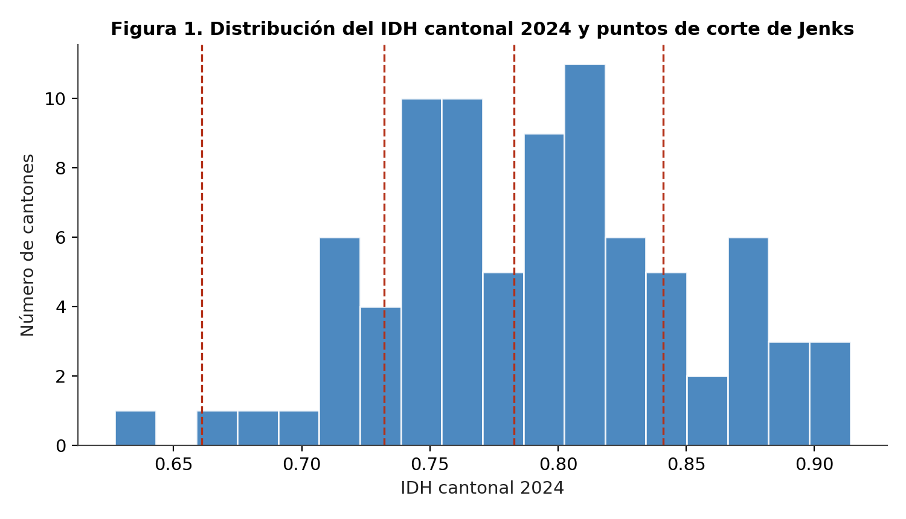
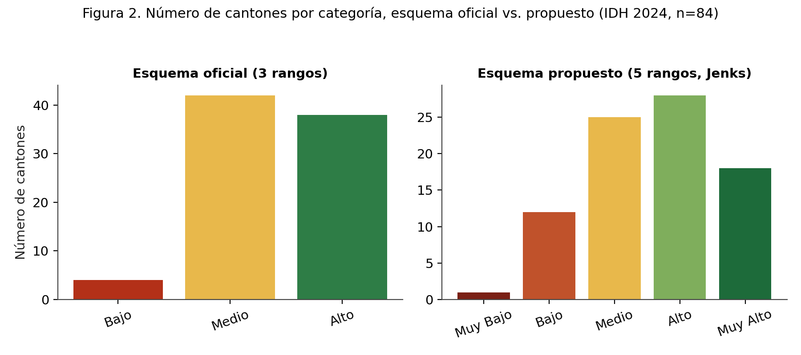
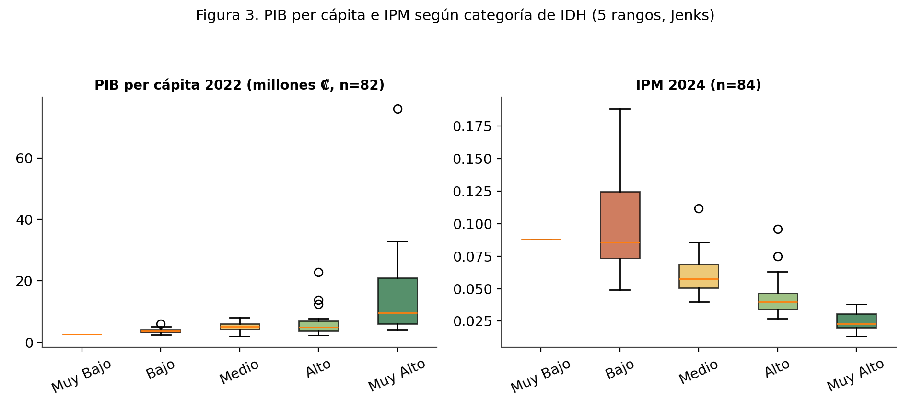
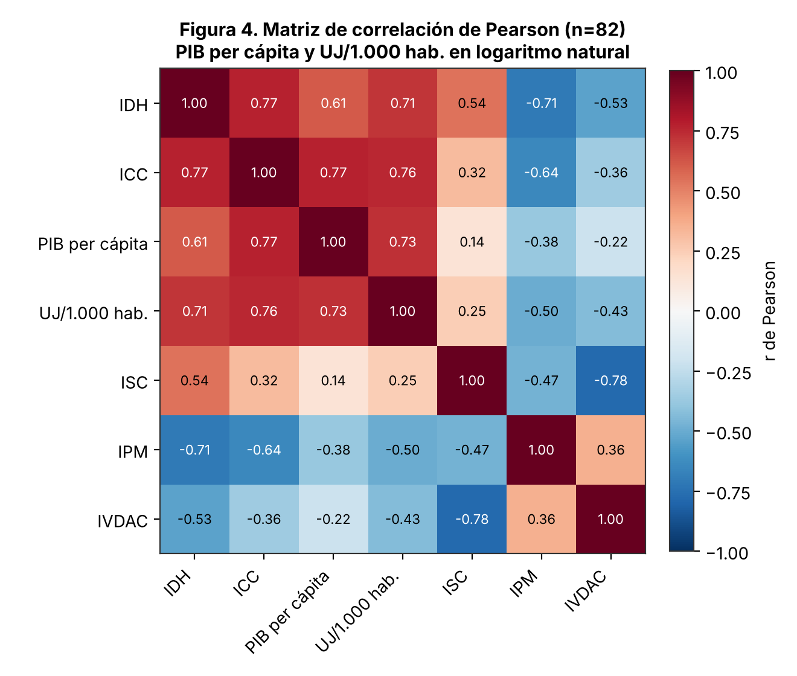
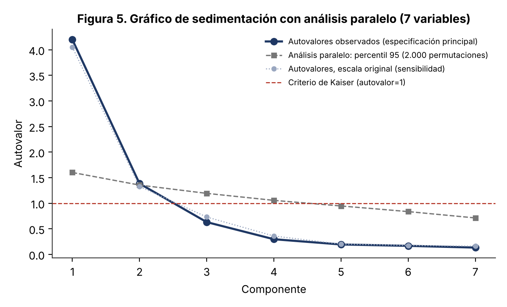
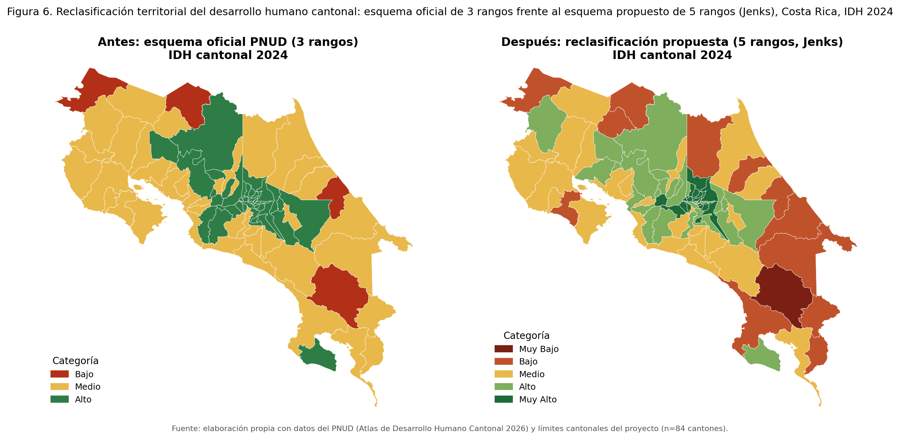
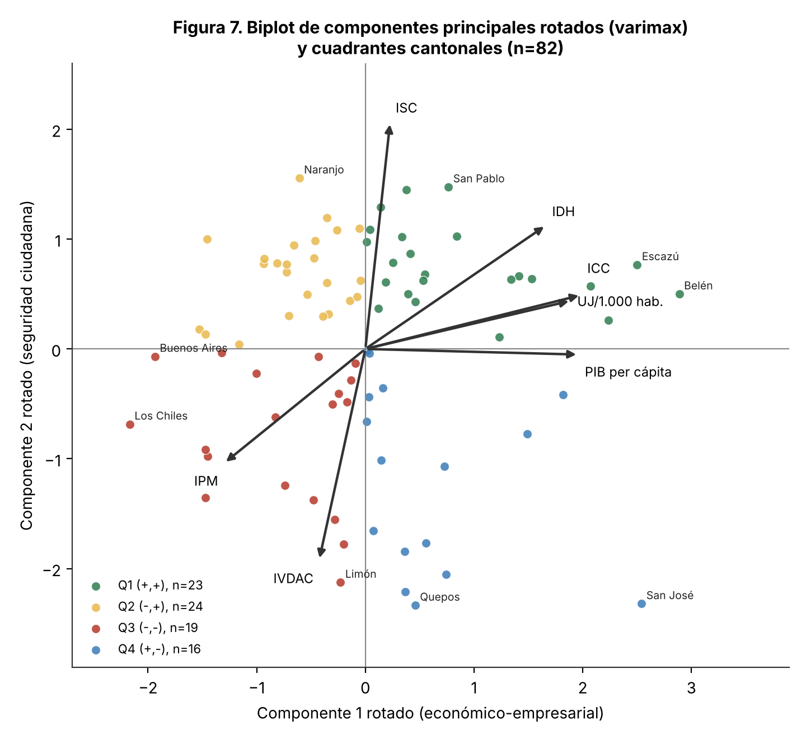
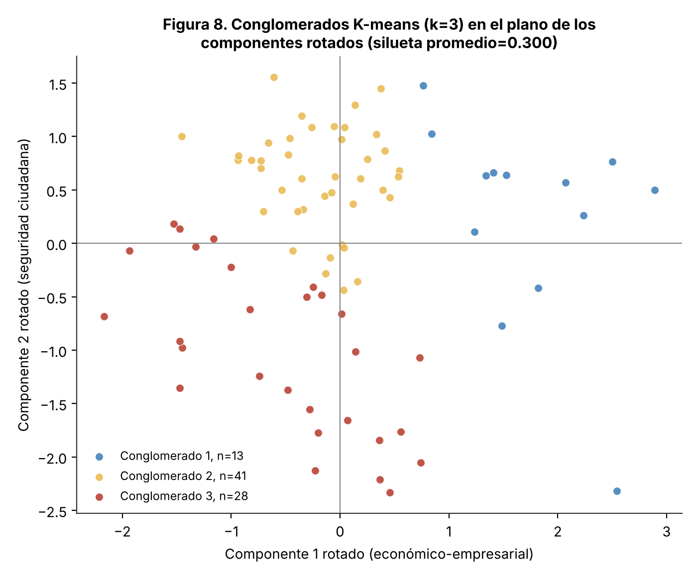
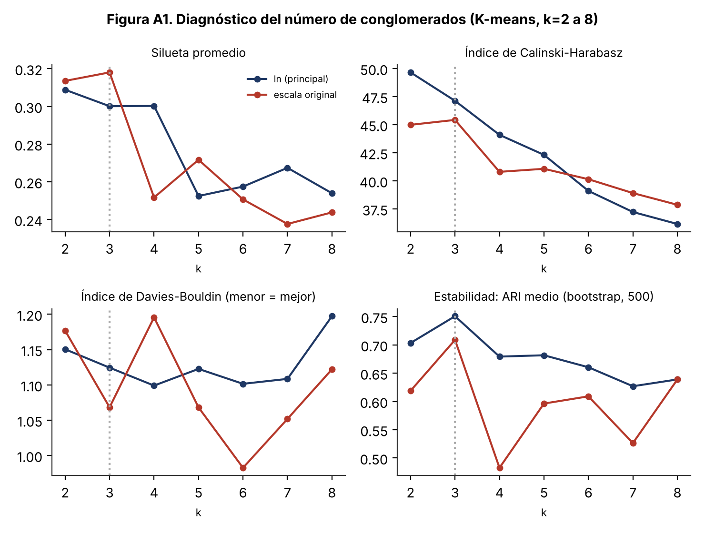

Artículo científico · manuscrito preparado para revisión por pares · 2 de octubre de 2026
Heterogeneidad territorial del desarrollo humano cantonal en Costa Rica
Reclasificación estadística de rupturas naturales y validación externa con productividad, competitividad y tejido empresarial (2010–2025).
MSI. Agustín Gómez Meléndez · CIOdD, Universidad de Costa Rica · Clasificación JEL: O15, R11, I31, C38, C43
Resumen
Antecedentes. Una versión previa propuso incorporar el PIB cantonal a la fórmula del IDH cantonal (IDHc, PNUD). La revisión metodológica de una persona experta del PNUD identificó objeciones conceptuales y empíricas de fondo a esa fusión, que este estudio adopta íntegramente y resuelve con un diseño distinto.
Objetivo. Caracterizar la heterogeneidad territorial del desarrollo humano cantonal sin alterar la fórmula oficial del IDHc, mediante una reclasificación en cinco categorías del IDH, el IDH ajustado por desigualdad (IDH-D) y el Índice de Desarrollo de Género (IDG), validada externamente —no fusionada— con el PIB per cápita, el Índice de Competitividad Cantonal (ICC) y la densidad de Unidades Jurídicas (UJ).
Resultados principales.
- Cinco categorías de IDH: Muy Bajo (n = 1), Bajo (12), Medio (25), Alto (28) y Muy Alto (18).
- Relación monótona con PIB per cápita (ρ = 0,516; n = 82), ICC (ρ = 0,746; n = 82), densidad de UJ (ρ = 0,631; n = 82) e IPM (ρ = −0,832; n = 84), con p de permutación = 0,0005 (mínimo alcanzable con 1.999 permutaciones) y q = 0,0005 tras Benjamini-Hochberg.
- El 51 % de los cantones (43 de 84) cambia de categoría al incorporar el ajuste por desigualdad (IDH-D), en su gran mayoría hacia una categoría inferior.
- PCA (n = 82, 7 variables; KMO = 0,78): dos ejes que explican 79,7 % de la varianza, uno económico-empresarial y otro de seguridad ciudadana.
- K-means (k = 3; silueta = 0,300; ARI de estabilidad bootstrap = 0,75): un conglomerado de 13 cantones de alto perfil económico, todos en la Gran Área Metropolitana, y otro de 28 cantones de bajo desarrollo y alta vulnerabilidad, 20 de ellos costeros o fronterizos. La separación es débil; el resultado es exploratorio.
Conclusión. La heterogeneidad territorial es consistente entre métodos y fuentes, y documentarla no requiere alterar la fórmula oficial del IDHc. El PIB cantonal y la densidad empresarial son insumos legítimos para caracterizar la estructura productiva territorial, pero no deben emplearse como corrección del bienestar material de los hogares residentes.
Datos y métodos
Fuentes y cobertura
Marco territorial: 84 cantones (Registro Nacional–IGN, División Territorial Administrativa 2026). Cada variable conserva su propio último año disponible; solo se declara una intersección explícita cuando se combinan fuentes en un mismo corte. Detalle en Fuentes y método.
Reclasificación (Jenks)
Rupturas naturales de Jenks en cinco categorías para IDH, IDH-D e IDG; para el IDG se clasifica la distancia a la paridad |IDG − 1|.
Validación externa
Correlación de Spearman con prueba de permutación (1.999 iteraciones; p = (b+1)/(B+1)), intervalos bootstrap del 95 % (5.000 remuestreos), corrección de Benjamini-Hochberg sobre las cuatro pruebas de Spearman, Kruskal-Wallis con tamaño de efecto ε² y comparaciones planificadas de Dunn (Holm).
Análisis multivariado exploratorio
PCA sobre la matriz de correlaciones (n = 82, 7 variables; PIB per cápita y UJ en logaritmo natural), con KMO, Bartlett, análisis paralelo (2.000 permutaciones) y MAP de Velicer; rotación varimax. K-means (Lloyd, k-means++, 100 inicios) evaluado de k = 2 a 8 con silueta, Calinski-Harabasz, Davies-Bouldin y estabilidad bootstrap (ARI).
Semillas declaradas
Permutaciones: 20260819 · bootstrap: 20260820 · análisis paralelo: 20260821 · K-means: 20260822. Versión de referencia de scikit-learn: 1.9.1.
Resultados de referencia (tablas CSV)
Las tablas completas de los anexos del artículo están disponibles como archivos CSV en articulo/resultados/.
| Contenido (según el artículo) | Archivo |
|---|---|
| Validación externa: Spearman, IC bootstrap, permutación, BH y Kruskal-Wallis (Tabla 5) | T5_validacion_externa.csv |
| Comparaciones post hoc de Dunn planificadas (Anexo E) | T5b_dunn_planificado.csv |
| Estadística descriptiva | T6_descriptivos.csv |
| Valores extremos según Tukey (Anexo C) | T6b_extremos_tukey.csv |
| Autovalores y análisis paralelo | PCA_autovalores_analisis_paralelo.csv |
| Cargas, comunalidades y KMO | PCA_cargas_comunalidades_KMO.csv |
| Diagnóstico de k en K-means (Anexo A) | K_diagnostico.csv |
| IDG bruto y clasificación por distancia a la paridad (Anexo D) | IDG_clasificacion_cantonal.csv |
| Resultados por cantón (categorías, componentes, cuadrantes, conglomerados) | cantones_resultados.csv |
GAM, LITO, FRONT; Anexo F) son una clasificación de referencia generada durante el análisis y requieren la validación del autor antes de citarse como definición oficial.Figuras









Reproducir el artículo
Los scripts se ejecutan en orden y escriben sus intermedios en articulo/_trabajo/ (no versionada). Las salidas publicadas están en articulo/resultados/.
git clone https://github.com/USUARIO/idh-cantonal-costa-rica.git && cd idh-cantonal-costa-rica
python -m venv .venv && source .venv/bin/activate
pip install -r requirements.txt
bash articulo/scripts/run_all.sh| Script | Qué hace |
|---|---|
common.py | Carga ds1.csv (n = 82) y ds3.csv (n = 84); Jenks de cinco clases. |
a1_base.py | IDG (|IDG − 1| y IDG bruto). |
a2_main.py | Tabla 5 (Spearman, permutación, bootstrap, BH, Kruskal-Wallis, Dunn-Holm), descriptivos, extremos de Tukey, PCA (KMO, Bartlett, análisis paralelo, MAP, varimax). |
a3_km.py | K-means k = 2 a 8: inercia, silueta, CH, DB y estabilidad (ARI). |
a4_sens.py | Comparación entre especificaciones. |
a5_final.py | Cuadrantes con puntajes varimax, K-means k = 3 y figuras 4, 5, 7, 8 y A1. |
a6_exportar.py | Exporta IDG, autovalores con análisis paralelo y cargas a CSV. |
verificar_reproduccion.py | Compara las salidas reproducidas con articulo/resultados/ (tolerancia 1e-9). |
Tiempo aproximado de ejecución completa: 25–30 minutos (el diagnóstico de K-means con 100 inicios y 500 remuestreos domina el tiempo).
Más detalle, entorno y verificación en Código.